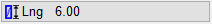
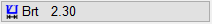
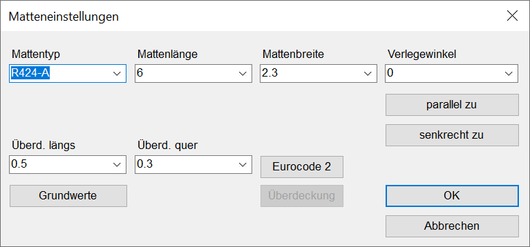
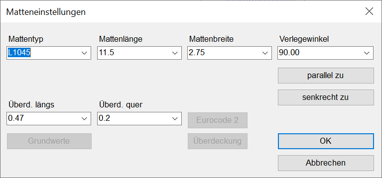
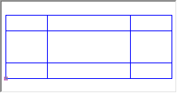
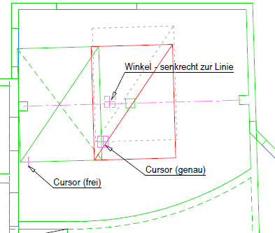

")
Einzelne Matten mit individuellen Einstellungen verlegen. Mattenart, -typ und -maße können über die Schaltflächen im Funktionsbereich geändert werden. Die aktuellen Einstellungen werden auf den Schaltflächen angezeigt.
·Sollen mehrere Matten als Mattenverbund verlegt werden, können die Einzelmatten über Referenzpunkte aneinandergefügt werden.
·Mattenart und -typ, Mattenmaße, Verlegewinkel und Überdeckungslängen können über die Schaltflächen im Funktionsbereich eingestellt werden.
·Einzelne Matten werden grundsätzlich als Rechtecke behandelt und verwaltet.
·Wenn Sie schräg liegende Matten einfügen möchten, drehen Sie das Koordinatensystem. Siehe: Systemwinkel ändern.
Voreinstellungen |
Beschreibung |
|---|---|
|
Mattenauswahl (Lager-, Vorratsmatten oder Listenmatten; Mattentyp, Matteneinstellungen). |
|
Mattentyp. |
 |
Mattenlänge. |
 |
Mattenbreite. |
|
Übergreifungslänge in Längs-(Trag)richtung (Berechnung nach EC 2 möglich). |
|
Übergreifungslänge in Querrichtung (Berechnung nach EC 2 möglich). |
|
Übernahme der Parameter aus einer anderen Matte. Abfrage: Sowie welche Matte. (Abbruch mit Esc) |
|
Richtung der Tragstäbe. |


Angaben zu den zu verlegenden Lager- oder Vorratsmatten. Alle Angaben in Eingabeeinheiten (vgl. Untere Menüleiste → Eingabe: z. B. "m").
 |
Mattentyp
Verfügbare Lager- oder Vorratsmatten. Öffnen Sie die Dropdown-Liste  und klicken Sie den gewünschten Mattentyp an.
und klicken Sie den gewünschten Mattentyp an.
Mattenlänge; Mattenbreite
Klicken Sie einen der Vorschläge aus der Liste an oder geben Sie das erforderliche Maß direkt ein.
Verlegewinkel
Auswahl des Verlegewinkels.
|
Verlegung parallel oder senkrecht zu einer vorhandenen Linie oder einem Text ausrichten. Klicken Sie das Element an, dessen Winkel Sie übernehmen möchten. [Linie oder Text für Winkel anklicken]. Der Verlegewinkel wird nach Anklicken einer Linie oder eines Texts im Auswahlfeld Verlegewinkel angezeigt. |
|


Überd. Längs; Überd. Quer
Auswahl oder Eingabe der Stoßüberdeckung in Längs- und Querrichtung. (Angaben in Eingabeeinheiten).
Grundwerte
Übernimmt für Überd. Längs und Überd. Quer die Werte aus dem Dialog Betonstahl Tabellen.

Ermittlung der Stoßüberdeckung nach Eurocode 2. Öffnet den Dialog Überdeckung nach Eurocode 2.

Mattenabhängige Berechnung der Stoßüberdeckung nach Eurocode 2 für den ausgewählten Mattentyp.
Verbund Auswahl der Verbundart. Guter Verbund I; Mäßiger Verbund II Wählen Sie zwischen gutem und mäßigem Verbund. Querstoß bei R‑Matten Auswahl des Querstoß-Typs (nur möglich bei R‑Matten). Tragstoß; Verteilerstoß Geben Sie an, ob es sich um einen Trag- oder Verteilerstoß handelt. Betongüte Auswahl der Betongüte. Stoßüberdeckung Längs; Stoßüberdeckung Quer In Abhängigkeit von der Betongüte und den Verbundbedingungen wird die erforderliche Übergreifungslänge ls im Zwei-Ebenen-Stoß angezeigt. Das Verhältnis von [erf as] zu [vorh as] beträgt 1,0. Die Werte wurden dem Faltblatt des Institutes für Stahlbetonbewehrung entnommen. https://www.isb-ev.de |
Übersicht notwendiger Übergreifungslängen bei verschiedenen Mattentypen. Öffnet die Datei Vorratsmatten.pdf.
 |
Mattentyp
Geben Sie eine Bezeichnung ohne Leerzeichen ein.
Mattenlänge; Mattenbreite
Bestimmen Sie die Abmessungen.
Überd. Längs; Überd. Quer; Verlegewinkel
Geben Sie die Werte wie bei den Lagermatten beschrieben ein.
Um eine Matte mit den aktuellen Einstellungen zu verlegen
§Wählen Sie die Mattenlage und den Verlegemodus:
|
Auswahl der Mattenlage mit entsprechender Darstellung der Mattendiagonalen. |
Auswahl des Verlegemodus: GenVer: Genaue Verlegung an einem beliebigen Referenzpunkt. Referenzpunkt muss angeklickt werden. FreVer: Verlegung der Matte an beliebiger Stelle. |
|
 |
Übersichtsfenster mit Einfügepunkt. Die Matte wird proportional dargestellt. Die zusätzlichen innenliegenden Linien deuten die Überdeckung an, die eingestellt ist. Wenn Sie einen Schnittpunkt anklicken, wird dieser als Einfügepunkt übernommen. Der Einfügepunkt entspricht der Lage des Cursors. |


Die Matte hängt als Rahmen am Cursor.
§Setzen Sie die Matte per Mausklick ab [Lage der Matte]:
-Die Matte wird an der gewünschten Position gezeichnet. Sie können sofort eine weitere Matte absetzen. [Lage der Matte].
-Um die Matte nachträglich über eine Koordinateneingabe exakt zu platzieren, nutzen Sie im Mattenmenü die Funktion [Versch].
Beispiel Stützbewehrung:
 |
§Stellen Sie sicher, dass FreVer (im Funktionsbereich) aktiv ist. Richten Sie den Winkel senkrecht zur Linie des Trägers aus. §Setzen Sie die Matte per Mausklick an die gewünschte Position. [Lage der Matte]. §Schalten Sie auf GenVer (im Funktionsbereich) um, und setzen Sie den Cursor in der Übersicht auf den Schnittpunkt der unteren Mattenbegrenzung und der linken Linie der Überdeckung. Danach klicken Sie den unteren rechten Punkt der zuvor verlegten Matte an. Dadurch wird der Eckpunkt gefangen. |
Siehe auch:
Zugehörige Referenzen: